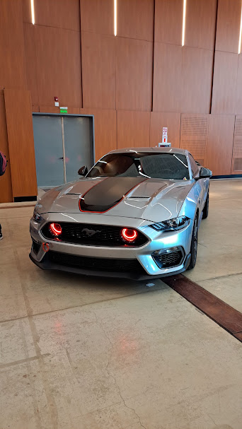
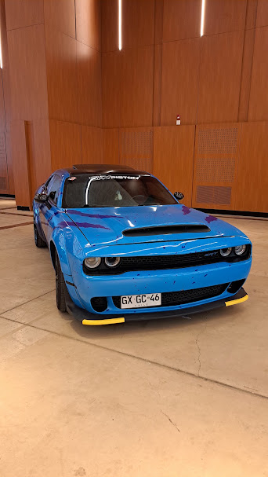
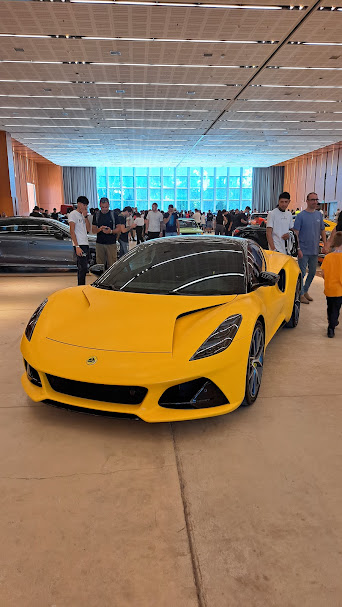
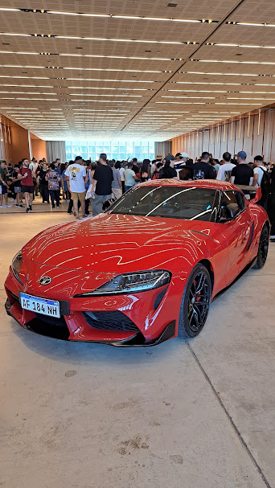

Nuestros Autos
Autos 0km
Contamos con una amplia variedad de autos 0km de las principales marcas del mercado. Todos nuestros vehículos son nuevos, con garantía de fábrica y documentación al día.
Ford Mustang 2026

El Ford Mustang es un coupé deportivo (con versión convertible disponible) de tracción trasera, que ofrece motorizaciones nafteras desde un EcoBoost turbo 2.3L de 4 cilindros con unos 315 CV hasta el icónico V8 5.0L "Coyote" que supera los 480 CV en su versión GT, combinables con caja manual de 6 velocidades o automática de 10 velocidades; según el motor, acelera de 0 a 100 km/h en entre 4 y 5.5 segundos y alcanza una velocidad máxima cercana a los 250 km/h, todo dentro de un diseño clásico de muscle car americano con capot largo y línea deportiva.
Dodge Challenger 2026

El Dodge Challenger es un coupé deportivo de estilo muscle car americano, de tracción trasera (con versión AWD en algunos modelos), que ofrece desde un V6 3.6L de unos 305 CV hasta motores V8 HEMI de 5.7L, 6.4L (392) y el sobrealimentado 6.2L Supercharged "Hellcat" que supera los 700 CV en sus versiones más potentes, combinables con caja automática de 8 velocidades o manual de 6 velocidades; según la versión, acelera de 0 a 100 km/h en menos de 4 segundos en las variantes Hellcat y alcanza velocidades máximas de hasta 320 km/h, dentro de un diseño retro inspirado en los Challenger clásicos de los años 70.
Lotus Emira 2026

El Lotus Emira es un coupé deportivo biplaza de motor central trasero, el último modelo con motor de combustión de la marca británica, disponible con un motor Toyota V6 3.5L supercargado de aproximadamente 400 CV o un 4 cilindros AMG turbo 2.0L de unos 360 CV, combinables con caja manual de 6 velocidades o automática de 8 velocidades según la versión; acelera de 0 a 100 km/h en alrededor de 4.2 a 4.5 segundos y alcanza una velocidad máxima cercana a los 290 km/h, todo en una carrocería ligera de fibra de vidrio y aluminio con el característico diseño aerodinámico y bajo centro de gravedad propio de Lotus.
Toyota Supra 2026

El Toyota Supra (GR Supra) es un coupé deportivo de motor delantero y tracción trasera, desarrollado en conjunto con BMW, disponible con un motor 4 cilindros turbo 2.0L de unos 258 CV o un 6 cilindros en línea turbo 3.0L de aproximadamente 340 a 387 CV según la versión y el año, combinables con caja automática de 8 velocidades o manual de 6 velocidades; en su versión más potente acelera de 0 a 100 km/h en alrededor de 4 segundos y alcanza una velocidad máxima cercana a los 250 km/h (limitada electrónicamente), con un diseño moderno de líneas curvas, capot largo y bajo centro de gravedad que retoma el espíritu deportivo de la icónica saga Supra.